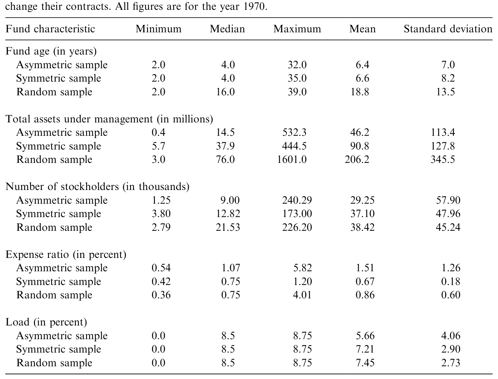
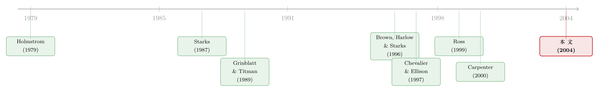

把「奖金」从工资条上抹掉，基金经理反而更敢赌了？
本文读的是 Golec & Starks (2004, Journal of Financial Economics)：1970 年美国国会一纸法令，强行抹掉了一批共同基金合约里的「不对称业绩费」。监管者本想借此降低基金的冒险倾向，结果这批被改合约的基金，相对市场的风险反而上升了；与此同时，它们还流失了股东和资产。一个看似「拨乱反正」的好心政策，被基金经理用一种谁都没料到的方式接住了。
1 一个监管者「算错了」的实验
先讲一个张力十足的场景。
1960 年代末，美国共同基金行业里悄悄流行起一种新的收费方式：业绩费 (performance fee)。基金管理公司不再只收一笔固定的「管理费」，而是把自己的报酬和业绩挂钩——跑赢基准就多拿，跑输基准就少拿。听上去很合理，对吧？让管理人和投资人「同船共渡」。
但其中有一类合约，长得格外刺眼：不对称业绩费 (asymmetric performance fee)。它的设计是——跑赢的奖励，远大于跑输的惩罚。国会和美国证监会 (SEC) 看着这种合约，心里冒出一个朴素的担忧：这不就是在怂恿基金经理去赌博吗？赢了，奖金落袋；输了，反正罚得轻，亏的主要是投资人的钱。在 1971 年的国会记录里，一位投资顾问写得很直白：「杠杆化的费率不可避免地诱使顾问去追逐『超额』业绩，要么承担越来越大的风险，要么持有极端头寸……这是一种用别人的钱去冒不当风险的利益冲突。」(U.S. Congress, 1971, p. 254)
于是 1970 年，国会修订了《投资顾问法》(Investment Advisers Act)，明令禁止共同基金使用不对称业绩费：你要收业绩费可以，但奖金率必须等于惩罚率，也就是只能用对称业绩费 (symmetric performance fee)。法令 1970 年 12 月 14 日颁布，1971 年同日生效。一批基金被迫坐下来重写自己的薪酬合约。
监管者的算盘很清楚：合约的凸性 (convexity) 降下来了，基金经理「赌一把」的冲动就该跟着降下来，组合风险也该随之下降。
然而，事情没这么简单。 这正是这篇论文要讲的故事——以及它为什么是一个难得的「自然实验 (natural experiment)」。
2 为什么这是一个干净的实验
研究合约激励有一个老大难问题：合约的变化几乎从来都不是外生的。公司什么时候改高管的薪酬方案？往往恰恰是在业绩、前景、治理结构发生变化的时候——这叫合约变更的内生性 (endogeneity)，Larcker (1983) 早就指出过。你看到「改了合约之后风险上升」，根本分不清是合约导致了风险，还是某个第三因素同时驱动了两者。此外，高管个人的薪酬变更还掺杂着复杂的税收处理差异 (Miller & Scholes, 1981)，以及行业、技术冲击带来的特异噪声。
这篇论文的妙处，在于它几乎把这些麻烦一次性甩干净了。
首先， 合约的变更是被国会强行规定的，纯粹外生——不是基金自己想改，而是不得不改。作者还特意强调：在整个五年样本期里，唯一发生的费率参数变动，就是这次国会强制的变动；基金平时几乎从不动自己的薪酬合约。
接着， 收费的对象是管理公司而非某个具体经理个人，所以从一种费率切换到另一种，没有直接的个人税收效应。被管理的又是金融资产、高度分散，避开了行业或技术冲击的特异影响。基金的管理结构和薪酬方案本身也相对简单。
然后，最关键的一步：作者手里有一个干净的、可观测的「管理决策变量」——组合风险。基金每周的收益率都有，风险可以直接量出来。这正是过去研究最缺的东西。
于是一个标准的「处理组—对照组」结构就立起来了：
- 处理组：35 只使用不对称业绩费、被迫在 1971 年底前改合约的基金（asymmetric sample）；
- 对照组一：22 只使用对称业绩费、不需要改合约的基金（symmetric sample）；
- 对照组二：35 只随机抽取的、压根没有业绩费的成长型基金（random sample）。
数据来自 Lipper Analytical Services 的每周收益率，区间 1969 年 1 月至 1973 年 12 月，三组基金的投资目标都是「成长」。三组的基本特征见表 1：被改合约的不对称组明显更年轻（中位数 4 年 vs. 随机组 16 年）、更小（中位资产 1450 万美元 vs. 7600 万美元）、股东更少、费率更高（1.07% vs. 0.75%）。这些差异本身就提醒我们：处理组并非随机抽样，后面还要回来谈这件事。

Table 1: provides summary characteristics for the three samples of mutual funds
为什么要专门设一个「对称业绩费」对照组？因为它扮演了一个微妙而重要的角色：它是有业绩费、但不是不对称类型的基金。这样一来，如果存在某种对所有业绩费基金（无论对称与否）都起作用、却不影响无业绩费基金的效应，作者就能用对称组把它「吸收」掉。1970 年的修正案不止禁了不对称费这一条，万一别的条款对业绩费基金有差别影响，对称组也能帮忙识别出来。
3 把那张「奖金合约」摊开来看
要理解风险为什么会变，得先把合约本身看清楚。论文用一个统一的式子刻画了三种费率：
$$ s(X) = \begin{cases} K_0\, I + K_p\, I\,(R_i - R_m) & \text{if } R_i < R_m \\[4pt] K_0\, I + K_b\, I\,(R_i - R_m) & \text{if } R_i \ge R_m \end{cases} $$
其中 \(I\) 是投入基金的金额，\(R_i\) 是基金 \(i\) 的总收益率，\(R_m\) 是市场基准组合的总收益率，\(K_0\) 是基础费率（base），\(K_p\) 是惩罚费率（penalty），\(K_b\) 是奖金费率（bonus），均以百分比计。
这三个参数的取值，就决定了合约长什么样。让我们对这个「跑赢」的分支做一次逐部分的拆解：
现在三种合约就一目了然了：
- 若 \(K_p = K_b\)，奖惩对称——这就是对称业绩费。跑赢分多少，跑输就罚多少。
- 若 \(K_p \neq K_b\)（绝大多数情形是 \(K_p < K_b\)，惩罚的斜率比奖励的斜率平缓），就是不对称业绩费。在 \(R_i = R_m\) 这个拐点处，报酬曲线向上「折」了一下——这正是凸性的来源，也是国会盯上的东西。有些基金甚至直接把 \(K_p\) 设成 0。
- 若 \(K_p = K_b = 0\)，就只剩基础费 \(K_0 \cdot I\)，这是绝大多数基金采用的、最普通的「按资产收一笔」的形式。
凸性意味着什么？意味着对一个由不对称费率激励的经理来说，收益的波动本身是有价值的——下行被截断，上行敞开。Starks (1987) 和 Grinblatt & Titman (1987, 1989) 的理论模型都说明：这种凸性会让经理偏好更高的组合风险。所以论文的第一假设顺理成章：在其他条件相同的情况下，被不对称费率激励的经理，会比被对称费率激励的经理选择更高的风险。换句话说，SEC 担心「不对称合约对应更高风险」这件事，本身是对的。
那么强制把 \(K_p\) 抬到等于 \(K_b\)、把这个「折点」抹平，风险不就该掉下来了吗？
4 反转：监管者期待的方向，只在显微镜下才看得到
这里就是全文最精彩的反转。
理论上，事情远比「凸性降→风险降」复杂。Carpenter (2000) 和 Ross (1999) 都指出：仅仅改变薪酬合约的凸性，并不会自动让经理的风险决策朝某个确定方向移动。 因为经理是风险厌恶的，改合约会同时触发好几股力量。Ross 把它拆成三个效应：凸性效应 (convexity effect)、平移效应 (translation effect) 和放大效应 (magnification effect)。凸性降了，可能压低风险；但与此同时，合约的整体水平（平移）和斜率（放大）也在变，这两者完全可能把经理推向更高的风险。最终是哪个方向，是个实证问题，不是理论能先验断定的。
（关于「改变合约凸性未必改变风险方向」这套逻辑，可参见《「赌一把」未必是加杠杆：当落后的基金经理反手减仓》与《当老板既藏着本事、又能挑风险：一纸最优合约里被翻转的「风险—激励」常识》。）
那么基金实际上是怎么改参数的？这是理解结果的钥匙。法令只要求 \(K_b = K_p\)，但没规定该怎么改。论文的 Table 2 统计了 35 只被改合约基金的选择：
- 27 只（约 77%）选择提高 \(K_0\)，也就是把固定的「按资产收费」那部分抬上去；
- 34 只（除一只外的全部）降低了奖金参数 \(K_b\)；
- 惩罚参数 \(K_p\) 的变化则比较分散，增、减、不变都有，但多数（18 只）是提高了 \(K_p\)。
- 平均来看，\(\Delta K_0 = 0.254\)，\(\Delta K_b = -1.037\)，\(\Delta K_p = 0.081\)。
注意这个组合：大幅砍掉奖金、小幅抬高惩罚、再用更高的固定费补偿自己。没有一只基金采用最「干净」的办法——只单独提高惩罚参数。
那风险呢？作者用了三把尺子来量：组合收益的方差 (variance)、经市场方差调整后的方差 (market-adjusted variance)，以及市场模型回归出来的贝塔 (beta)。这里有个细节值得称道：样本期内市场收益的方差从 4.7% 大幅降到 3.7%，而这些基金又高度分散、与市场相关性中位数高达 0.90。如果只看绝对方差，会被市场本身的「降波」给污染。所以作者刻意引入了相对市场的两个风险度量——调整后方差和贝塔——来做归一化。贝塔通过最朴素的市场模型估出：
$$ R_i = a_i + b_i R_m + e_i $$
其中 \(R_i\) 是基金每周收益，\(R_m\) 是 CRSP 市值加权指数（含股息）的同期收益，\(e_i\) 是残差，逐只基金分别做 OLS 回归。比较的是法令前的 1969–1970 与法令后的 1972–1973 两个窗口，中间的 1971 整年（合约陆续变更、噪声最大）被剔除。
结果分两层：
改革前（1969–1970），不对称组的平均方差和调整后方差都显著高于另两组（显著性超过 5% 水平），贝塔上不对称组与对称组没有显著差异，但三个风险指标都是「有业绩费组（对称+不对称）显著高于随机组」。——第一假设成立。
改革后（1972–1973），出现了那个让监管者尴尬的画面。被改合约的前不对称组，相对市场的风险依然高于随机组；它不再高于对称组，但对称组此时反而成了风险最高的一组。三组之间两两的均值风险差异都显著超过 0.001 水平。整体看，强制「拨乱反正」并没有把这批基金的风险压到随机组的水平。
为什么会这样？论文给的解释很有意思。被改合约的 35 只基金里，有 10 只（29%）干脆彻底取消了业绩激励结构，剩下 25 只（71%）改成了对称业绩费。也就是说，国会这一刀，把原本「同质」的不对称组劈成了两半：一半保留了（对称的）业绩费，一半完全退回普通费率。作者顺着这条线把不对称组拆成两个子样本验证：那 10 只彻底取消业绩费的基金，改革后平均方差 5.96、平均贝塔 1.03，与随机组（5.49 等）几乎一模一样；而保留对称业绩费的那 25 只，风险水平则向对称组靠拢。
于是核心结论浮现：「业绩费本身」——而非它对不对称与否——才是和更激进风险承担相联系的东西。 谁手里还攥着业绩费（哪怕是对称的），谁的风险就高；谁把业绩费彻底扔了，谁就回落到普通基金的水平。
那国会期待的「负效应」到底有没有？有。但你得用显微镜才看得到。作者强调，他们最强的结果来自惩罚参数 \(K_p\)。由于其他参数可观测、可控制，他们能把 \(K_p\) 单独隔离出来看。当真正只盯着 \(K_p\) 这一个参数的变化时，确实能识别出国会所期待的、压低风险的负向效应。可问题在于，现实里基金从不只动 \(K_p\) 一个参数——它们同时砍奖金、抬基础费，多股力量叠加之后，相对市场的风险净效应反而是上升的。这恰恰印证了 Carpenter 和 Ross 的理论：改合约从来不是一个参数的故事。
5 还有一群人在用脚投票
风险只是故事的一半。论文第 4 节追问了另一个问题：股东怎么想？
答案干脆利落：在禁令施加前后，被改合约的不对称基金同时流失了股东和资产，而两个对照组则变化不大、甚至还在增长。投资者用赎回，对这次合约变更投下了反对票。
这是一个常被忽略却很有分量的发现。它意味着，那份不对称业绩费合约，对当时持有这些基金的股东来说，是有价值的——可能正是冲着那份「凸性」、冲着经理被激励去搏一把的预期去的。监管者好心替投资者「拆掉」了这份合约，一部分投资者的反应却是离场。结合资金流对业绩的敏感性研究（如 Chevalier & Ellison, 1997；Sirri & Tufano, 1997），这条线索其实指向一个更深的问题：基金的合约结构本身，可能就是它招徕特定客户群的一部分。
6 文献脉络
把这篇论文放回它所处的研究长河里，能更清楚地看到它的位置。
最上游是委托—代理理论的奠基工作：Holmstrom (1979) 关于道德风险与可观测性、Shavell (1979) 关于风险分担与激励，奠定了「如何用合约约束代理人」的整套语言。
接着，这套语言被引入投资管理领域。Starks (1987) 用代理理论分析业绩激励费，Grinblatt & Titman (1987, 1989) 研究「客户如何赢得这场博弈」以及不利风险激励下业绩合约的设计——他们共同奠定了「不对称/凸性合约 → 更高风险偏好」的理论预期，也正是 SEC 担忧的理论根据。
然后，实证这一支开始积累。Brown, Harlow & Starks (1996) 发现基金经理在「锦标赛」式的相对业绩竞争下会调整风险，Chevalier & Ellison (1997) 直接把资金流的凸性当作隐性激励、识别出基金的冒险行为。但这些研究面对的，仍是内生的激励变化。
真正关键的一步来自理论的「泼冷水」：Carpenter (2000) 证明，最优补偿未必会提高经理的风险胃口；Ross (1999) 进一步把合约对行为的影响拆成凸性、平移、放大三个效应，指出方向不能先验断定。这两篇把「凸性降→风险降」的直觉彻底问题化了。
于是这篇论文落在了一个绝佳的位置：它用 1970 年国会的强制改令，提供了一个罕见的外生合约变更，既检验了上游的理论预期，又为 Carpenter–Ross 的「多重效应」提供了实证支持。它的独特贡献，是第一个检验「被迫改变合约」如何改变经理行为的研究。

7 评论与延伸（Q&A + 研究方向）
(a) 几个可能的疑问
Q：处理组和对照组在改革前就长得很不一样（更年轻、更小、费率更高），这还能叫「干净」的实验吗？
这是最该担心的一点，作者自己也没回避。三组在年龄、规模上差异明显，所以严格说这并不是随机分配的处理。作者的主要防线是「外生性 + 多组对照 + 可观测决策变量」：合约变更本身是国会强加的，不随基金特征而定；对称组用来吸收「所有业绩费基金共有」的效应；并且改革前后做的是组内前后对比，年龄、规模这类缓变特征在两年窗口内大体稳定。但样本只有 35/22/35 只、又都是 1970 年代的成长型基金，外部有效性和统计功效都受限，把它当成一个「启发性」的自然实验比当成「金标准」更稳妥。
Q：监管想降风险，结果风险上升——这到底是政策失败，还是我们误读了「风险」？
关键在于「相对谁的风险」。作者特意区分了绝对方差与相对市场的风险度量，因为样本期市场本身在降波。被改合约的基金，绝对方差可能跟着市场降了，但相对市场的风险（调整后方差、贝塔）并没有按监管预期回落。所以更准确的说法不是「政策完全失败」，而是「政策的净效应被基金的参数选择和客户结构变化抵消甚至反转了」——这正是 Carpenter–Ross 多重效应在数据里的样子。
Q：既然只盯惩罚参数 \(K_p\) 时能看到国会期待的负效应，为什么整体却是正的？
因为基金从不只改一个参数。它们在抬高 \(K_p\) 的同时，大幅砍掉奖金 \(K_b\)、并提高固定费 \(K_0\) 来补偿自己。\(K_p\) 这一个参数的边际效应确实是压低风险的，但其他参数的变动叠加上去，方向就被盖过去了。这恰恰是论文想讲的：合约是一个多维对象，单看一个旋钮会得出误导性的结论。
Q：那 10 只彻底取消业绩费的基金，是不是结论的全部来源？
它们是识别的关键，但不是全部。正是因为不对称组被劈成「彻底取消（10 只）」和「转为对称（25 只）」两半，作者才能论证「业绩费本身（而非不对称性）才与高风险相联系」——取消的那批风险回落到随机组水平，保留的那批向对称组靠拢。如果没有这种自然的分裂，这个机制是讲不清楚的。所以这 10 只更像是一个意外得到的「内部对照」。
Q：股东流失，是因为讨厌新合约，还是因为这些基金本来就业绩差、要被淘汰？
论文给的是「流失与合约变更在时间上重合，且对照组没有这种流失」这一相关性证据，并不能完全排除业绩驱动的赎回。考虑到样本期里这些年轻小基金本就生存压力大，「合约价值下降」与「业绩本身不佳」很难彻底分开。把它读成「投资者对合约变更有负面反应」是合理的，但读成严格的因果就过头了。
Q：这件 1970 年代的旧事，对今天还有什么意义？
意义在于，美国之外的对冲基金、机构基金、欧洲共同基金，以及美国的对冲基金和商品交易顾问，至今仍广泛使用被美国共同基金禁止的不对称业绩费（Fung & Hsieh, 1999；Brown et al., 2001）。这篇论文等于告诉这些市场的监管者：想靠「拉直合约」来管住风险，可能会落空，因为管理人会重新优化其余参数、客户也会重新筛选。
(b) 几个可能的研究问题与提案
1. 把这套逻辑搬到公司债基金 / 信用市场。 【经济故事】信用资产的收益分布天然左偏、带「卖保险」式的尾部风险，凸性合约对信用基金经理的诱惑，可能比对股票基金更强——下行被惩罚截断、上行靠承担信用与流动性风险敞开。【可行性】中。需要信用基金的费率合约细节（多为私募/机构，披露差），可用对冲基金数据库（如 HFR、Lipper TASS）拼出业绩费结构，风险用信用利差暴露、流动性贝塔来量。识别上缺一个像 1970 年那样干净的外生冲击，是主要短板。
2. 外资持有人会不会偏好「凸性合约」基金？ 【经济故事】如果不对称业绩费是一种招徕特定客户的「信号」，那么风险偏好不同的投资者群体（如外资 vs. 本地散户）可能系统性地分布在不同合约的基金里。【可行性】中。需要把基金层面的合约类型与持有人结构匹配起来；在仍允许不对称费的欧洲/亚洲市场可做横截面，识别仍偏相关性。可与《外资真是「蝗虫」吗？》一类的跨国持有人研究对话。
3. 用现代交错 DiD 重估「强制合约变更」类的自然实验。 【经济故事】各国/各时期对业绩费的监管放开或收紧并非同时发生，是天然的「交错处理」结构；而近年文献已指出交错 DiD 的双向固定效应估计可能把符号弄反。【可行性】高。把多国业绩费监管变更编码成处理时点，配合稳健的交错 DiD 估计量重做。数据可得性是主要约束，但方法是现成的（参见《当「更稳健」的设计悄悄把符号弄反了》）。
4. 合约凸性与基金资金流—业绩敏感性的交互。 【经济故事】Chevalier–Ellison 式的「资金流凸性」本身就是一种隐性业绩费。如果一只基金同时有显性凸性合约和隐性流量凸性，两种凸性是叠加还是替代？这决定了监管显性合约到底有没有用。【可行性】高。用现代基金数据（CRSP MF、Morningstar）可同时构造显性费率结构和流量—业绩曲线，识别相对扎实。
5. 「彻底取消业绩费」作为一种主动信号。 【经济故事】本文里 10 只基金被迫面对选择时，干脆扔掉了业绩费。在不被强制的环境下，主动放弃业绩费会不会是低风险偏好或高能力经理的一种分离信号？【可行性】中。需要找到自愿改费率的事件（罕见，本文也强调基金几乎从不主动改），可在合约更自由的离岸基金市场寻找样本。
我的判断
这篇论文最值得敬重的地方，是它对「识别」的自觉。在一个合约变更几乎注定内生的领域里，作者抓住了 1970 年国会强制改令这个外生冲击，又恰好有逐只基金的可观测风险变量，把一个老问题做成了一个少见的近似自然实验。它的核心贡献——强制拉平合约凸性，并不会把风险按监管者预期的方向压下去，因为「业绩费本身」才是关键、且经理会重新优化其余参数——既呼应了 Carpenter (2000) 和 Ross (1999) 的理论，又给出了难得的实证。把「被迫改变合约」单独拎出来研究，本身就是一个有创意的提问。
但识别上的隐忧也实打实。处理组与对照组在改革前就系统性地更年轻、更小、费率更高，样本量又只有几十只、集中在 1970 年代成长型基金，统计功效和外部有效性都打折扣；股东流失那一节，相关性强于因果。更深一层，「业绩费基金风险更高」可能本身就是一种选择效应——爱冒险的经理选择了业绩费合约，而非合约把他们改造成了冒险者；本文的前后对比能缓解但不能根除这一点。
如果让我接着往下做，我最想看到两样东西：一是把同样的「强制合约变更」逻辑搬到公司债与信用基金，那里凸性的诱惑更大、尾部风险更真实；二是用今天更丰富的持有人数据，去检验合约凸性是不是一种筛选客户的信号——毕竟，当年那些用脚投票离场的股东，或许早就替我们回答了一半。
参考文献
Brown, K., Harlow, W. V., Starks, L. (1996). Of tournaments and temptations: An analysis of managerial incentives in the mutual fund industry. Journal of Finance 51(1), 85–110.
Brown, S., Goetzmann, W., Park, J. (2001). Careers and survival: Competition and risk in the hedge fund and CTA industry. Journal of Finance 56(5), 1869–1886.
Carpenter, J. (2000). Does option compensation increase managerial risk appetite? Journal of Finance 55(5), 2311–2331.
Chevalier, J., Ellison, G. (1997). Risk taking by mutual funds as a response to incentives. Journal of Political Economy 105(6), 1167–1200.
Fung, W., Hsieh, D. (1999). A primer on hedge funds. Journal of Empirical Finance 6(3), 309–331.
Golec, J. (1992). Empirical tests of a principal-agent model of the investor-investment advisor relationship. Journal of Financial and Quantitative Analysis 27(1), 81–95.
Golec, J., Starks, L. (2004). Performance fee contract change and mutual fund risk. Journal of Financial Economics 73(1), 93–118.
Grinblatt, M., Titman, S. (1989). Adverse risk incentives and the design of performance-based contracts. Management Science 35(7), 807–822.
Holmstrom, B. (1979). Moral hazard and observability. Bell Journal of Economics 10(1), 74–91.
Larcker, D. (1983). The association between performance plan adoption and corporate capital investment. Journal of Accounting and Economics 5, 3–30.
Ross, S. (1999). Some notes on compensation, agency theory, and the duality of risk aversion and riskiness. Unpublished working paper, MIT.
Starks, L. (1987). Performance incentive fees: An agency theoretic approach. Journal of Financial and Quantitative Analysis 22(1), 17–32.